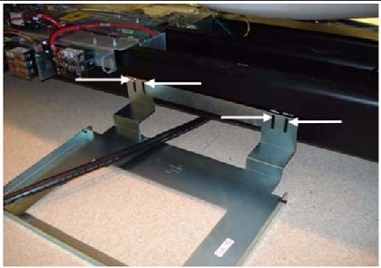
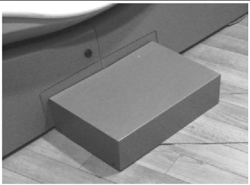
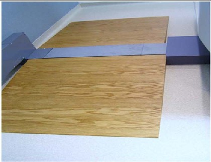
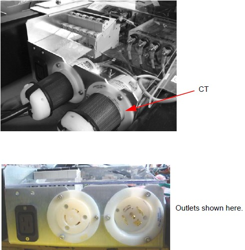
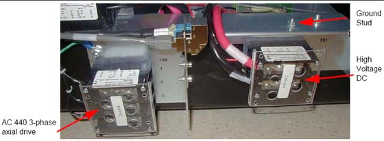
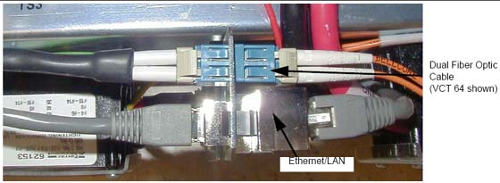
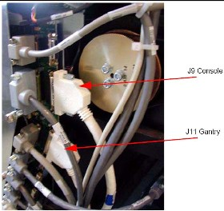
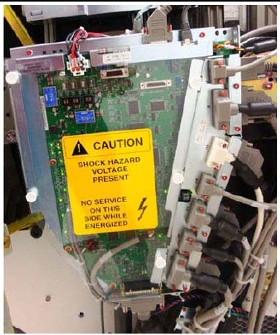

Operating Documentation
Direction 5193574-800, Rev# 22
LightSpeed 7.X Service Methods
Module Version 1.0, Version Date 4/22/10
Operating Documentation |
Rear cable entry is standard/preferred for cables. The base access area is limited, and the box is supplied with the system. Install the rear cable entry box (B7850RC/B7850TC) now, before routing cables to gantry.
Attach the rear entry cable box frame to the gantry base using four (4) screws that are shipped with the kit (see Illustration 1). The assembly can be made to fit floor entrance conduit or surface floor duct. However, ensure all conduits or floor ducts fit inside the base plate.
Illustration 1: Install Base Plate to Gantry

Illustration 2: Rear Entry Cable Box

There are three pairs of spacers shipped with this cover. Select the pair that is most appropriate for this site, based on the hardware. The three types are: Solid metal, Precut L-shaped metal, and Solid plastic - Can be cut
Cut filler plates to fit the cover box into the opening, if necessary.
When finished, it should look like the lower picture in Illustration 2.
An OSHA ramp is required. The ramp must have 1’ run of slope for each 1" rise in height.
Illustration 3: OSHA Ramp Example

| NOTE: | All system interconnect cables are located on the lean cart on the bottom right corner. |
| ||||
CABLE CONNECTION NOTICE: Potential for equipment damage.
| ||||
Install the cables to the gantry power pan. The power pan is located on the rear of the gantry at its base. See Illustration 5 for connections.
| NOTE: | The gantry 120VAC cable may not fit under the gantry frame. Install this cable before gantry placement-or remove the power plug-to route it under the gantry. In doing so, be careful not to damage the cable or power plug. |
Leave approximately 3 m (10 ft.) of the dual channel fiber and gantry Cat 5 cables under the gantry frame for troubleshooting.
Illustration 4: Gantry Power Pan

Illustration 5: Gantry Power Pan Connections

From the console:
Install the fiber run #103
Install the console LAN #102
Both cables should click into place when they are connected (see Illustration 6).
Illustration 6: Close-up of Power Pan Bulkhead

| NOTE: | The fiber cable and the LAN cable must click when locked
in place. HD fiber cable is slightly thicker, but is still fragile! Use care when routing the fiber cable. |
Install cables to the gantry TGPU. These two cables can be found on the lean cart in the cable collector boxes. Run 100 gantry TGPU J11 to PDU; run 101 gantry TGPU J9 to console.
Illustration 7: TGPU Connections (View A)

Illustration 8: TGPU Connections (View B)
